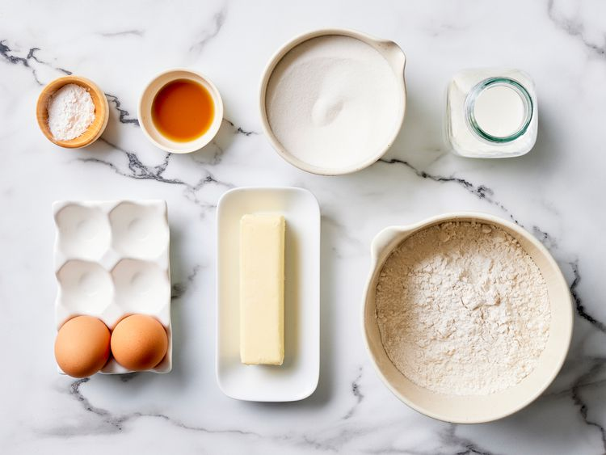

Yummy White Cake
Yummy White Cakes,
are a timeless treat, perfect for
any occasion. Crispy on the edges
and soft in the center, they’re
sure to satisfy your sweet tooth!
Recipe Information
Prep Time: 10 minutes
Cook Time: 10 minutes
Servings: 12 cookies
Difficulty: Beginner
Ingredients
- 1 cup white sugar
- ½ cup unsalted butter
- 2 large eggs
- 2 teaspoons vanilla extract
- 1 ½ cups all-purpose flour
- 1 ¾ teaspoons baking powder
- ½ cup milk
Instructions
- Gather all ingredients. Preheat the oven to 350 degrees F (175 degrees C). Grease and flour a 9-inch square cake pan.

- Beat sugar and butter together in a mixing bowl with an electric mixer until lighter in color and fluffy. Add eggs, one at a time, beating briefly after each addition. Mix in vanilla.
- Combine flour and baking powder in a separate bowl. Add flour mixture to wet ingredients in batches, alternating with milk, beating cake batter briefly after each addition.
- Pour cake batter into the prepared pan.
- Bake cake in the preheated oven until a toothpick inserted into the center comes out clean, about 30 to 40 minutes.
- Remove from the oven and cool completely. Frost and enjoy!
Tips
Pro Tip:Let your cake cool completely before frosting to prevent the frosting from melting and sliding off.

Nutrition Facts
Per serving (approximate):
- Calories: 209 kcal
- Fat: 9g
- Carbohydrates: 29g
- Protein: 3g